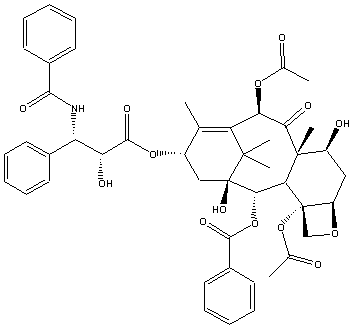

(004:141) Experiment #1
Literature
This experiment is designed to help you in three ways:
1.
To allow you to become familiar with some chemistry literature.
2.
To view and analyze some research papers.
3.
To practice citing papers.
There are many types of literature, but they are generally categorized as primary or secondary
sources.
Primary Sources
Journals contain new work. There are thousands of journals in all fields. About 50 of them
pertain to organic chemistry. Journals contain papers and communications. Communications (also
called letters) are brief papers, and generally contain preliminary data that can be republished later.
Data in papers cannot be republished.
Native English speakers are lucky because the most important journals are published in
English. Nevertheless, it can be a great advantage to read German, since Germany was the chemistry
leader 100 years ago. Articles in Russian, French, and Japanese are common as well. Most
departments have some people who can read these languages, and they are often very popular
people since they can help translate articles.
A few of the most important organic chemistry journals are shown below. The journal
abbreviation is in bold. (E.g., J. Am. Chem. Soc.)
1.
Bulletin of the Chemical Society of Japan
2.
Chemische Berichte (Germany)
3.
Helvitica Chimica Acta (Switzerland)
4.
Journal of the American Chemical Society (a journal for all types of chemistry, actually)
5.
Journal of the Chemical Society, Perkin Transactions 1 (Britain)
6.
Journal of Medicinal Chemistry
7.
Journal of Organic Chemistry
8.
Journal of Organometallic Chemistry
9.
Liebigs Annalen der Chemie (Germany)
10. Nature (Britain)
11. Science
12. Tetrahedron Letters (Britain)
Patents are granted for new compounds or a new method for making a known compound
(amazingly, 20-30% of all patents are chemical patents). One can find patent information in
Chemical Abstracts (a publication that prints abstracts of practically everything chemical).
Unfortunately, patents are not very reliable, since they may conceal important information, even
though patents are supposed to be a full disclosure.
Secondary Sources
Chemical Abstracts (published by the American Chemical Society) provides short
summaries, called abstracts, of many primary sources of information and is thus extremely useful
for “hunting down” information. The print version of Chemical Abstracts has been around for
many years, but its use has recently been diminished by the development of SciFinder Scholar, a
1
(004:141) Experiment #1
searchable online version of the series. The SFS database includes abstracts from roughly 9500
journals dating from the early 1900s to the present, and it is updated daily as new papers are
released. The program is available on all computers in the computer library, but due to a licensing
restriction, only five people may be connected to the database at the same time. The program may
be unavailable temporarily if the five-user limit has been reached, but it is generally not difficult to
access SFS during periods of normal use. If you are working from a computer connected to the
UI network, you may download a copy of the software for your personal use
(http://www.lib.uiowa.edu/chem/sfs2.html).
There a variety of ways in which you can search for abstracts on SciFinder Scholar. SFS is
most commonly searched by:
1)
Author: You can look up an author, such as David F. Wiemer.
2)
Subject: You can look up general subjects, such as catalysis.
3)
Chemical substance: You can look up a chemical by its name (e.g. “cyclohexane”), formula
(C
)
6H12 , or structure (
).
4)
Journal: You can view abstracts for the articles published in a particular journal and year.
Each abstract on SciFinder Scholar will include the following:
1)
the title of the paper
2)
authors names and addresses
3)
abbreviated name of the journal, and the year, volume, and page number
4)
language of the paper
5)
the short summary (about a paragraph)
As a convenient, time-saving feature, many abstracts on SciFinder Scholar link directly to an
electronic (PDF) version of the full journal article.
SciFinder Scholar also assigns a registry number to every compound abstracted. This is sort
of like a social security number. Thus, while compounds have different names in different countries,
it has only one registry number. There are approximately 14 million compounds with registry
numbers, and about 1 million are added each year.
Compendia of Tables and Information are a useful addition to any chemist’s
bookshelves. Some examples include
1.
The Handbook of Chemistry and Physics; 64th ed.; CRC Press: Boca Raton, Florida, 1983-
1984. (Often just called the CRC.) This is full of information, including the “Physical
Constants of Organic Compounds.”
2.
The Merck Index of Chemicals and Drugs; 10th ed., Merck and Company: Rahway, N.J.,
1983, is a good source of information about chemicals of medicinal importance. (Often, it is
just called the Merck Index.)
3.
Catalog Handbook of Fine Chemicals; Aldrich Chemical: Milwaukee, WI., 1996-1997. Yes,
this is just their chemical sales catalog. But they had the smarts to load it up with physical
constants on all the chemicals they sell, and they give the catalog away for free. Some people
check here first for melting points.
Reviews are intensive surveys of a rather narrow field. These are great for “boning up” on a
subject, especially when you lack time to read all of the primary literature. However, like a book,
you must be aware that you are getting one person’s view of a subject, and they may not be telling
you everything you really want to know. Some journals that include reviews are:
2
(004:141) Experiment #1
1.
Accounts of Chemical Research
2.
Angewandte Chemie, International Edition in English
3.
Chemical Reviews
4.
Chemical Society Reviews
5.
Heterocycles
6.
Journal of Chemical Education
7.
Natural Products Reports
8.
Synthesis
9.
Tetrahedron
A few other important journals or magazines that scientists read are
1 .
Chemical and Engineering News (This is the weekly news journal of the American
Chemical Society)
2.
Discover Magazine
3.
Scientific American (A bit “hard core” for nonscientists)
Serial publications are like reviews but published irregularly and are hardbound.
Examples include:
1.
Advances in Organic Chemistry
7.
Organic Syntheses (also very good)
2.
Advances in Photochemistry
8.
Progress in Macrocyclic Chemistry
3 . A d v ances in P h y s ical Organic
9.
Progress in Organic Chemistry
Chemistry
10. Reactive Intermediates
4.
Advances in Protein Chemistry
11. Selective Organic Transformations
5.
Organometallic Reactions
1 2 .T o p ics in S t e r e o c h e m i s t r y
6.
Organic Reactions (Very good)
Textbooks and books abound at every level, from sophomore to graduate student texts. Just a
few examples of some commonly used advanced books are given below.
1. Carey, F.A.; Sundberg, R.J. Advanced Organic Chemistry; 3rd ed.; Parts A and B; Plenum:
New York, 1990.
2. March, J. Advanced Organic Chemistry: Reactions, Mechanisms, and Structure, 3rd ed.; John
Wiley: New York, 1985.
3. Fieser, L.F.; Fieser, M. Reagents for Organic Synthesis; John Wiley: New York, 1968-; Vols 1-
.
4. House, H.O. Modern Synthetic Reactions, 2nd ed.; W.A. Benjamin: Menlo Park, CA, 1972.
5. Larock, R.C. Comprehensive Organic Transformations; VCH Publishers: New York, 1989.
6. Lowry, T.H.; Richardson, K.S. Mechanism and Theory in Organic Chemistry; Harper and
Row: New York, 1981.
7. Corey, E.J.; Cheng, X. The Logic of Chemical Synthesis; John Wiley: New York, 1989.
Electronic Databases
These include:
•
SciFinder Scholar (American Chemical Society). On-line search of Chemical Abstracts;
Available in Chemistry Library
•
Beilstein On-line: Chemical and physical properties and synthetic procedures, etc. for ~2
million compounds
•
Science Citation Index (SCI): Coverage of all the important publications in the physical
sciences. Available on CD.
3
(004:141) Experiment #1
•
C h e m F i n d e r is a free source of chemical information on the web
(http://www.chemfinder.com/). With ChemFinder, one can search on a chemical name, or using a
free plug-in for your web browser, one can draw a structure and do a search on that. Chemfinder is
also a quick way to obtain the CAS Registry Number for a chemical compound, a universal
identifier which may make searches on other databases like SDBS (below) easier.
•
AIST Spectral Database for Organic Compounds (“SDBS”) is a web-based source of
literature NMR, IR, and mass spectra. It will be useful for making comparisons with the spectra
that you will collect in this course. http://www.aist.go.jp/RIODB/SDBS/cgi-bin/cre_index.cgi
Citing
Material in this section can be found in The ACS Style Guide: A Manual for Authors and
Editors, Janet S. Dodd, editor; American Chemical Society: Washington, DC, 1986; pp 106-114.
When citing a work, generally follow these examples.
It is known that the Diels-Alder reaction provides a six-member ring.3
Or
It is known that the Diels-Alder reaction provides a six-member ring (3).
Or
Many researchers have discovered the link between reaction temperature and reaction rate.2,4-9
Or
Recent investigations (2, 4-9) prove the link between reaction temperature and reaction rate.
Or
Recent investigations2,4-9 prove the link between reaction temperature and reaction rate.
References
Books
Titles of books (and journals) appear in italics. For book examples, look at examples on
pages 2 and 3 of this handout. One thing you might notice is that some books have authors (see the
texts on page 2), while others do not (see the compendia on page 3). For more information, check
the ACS Style Guide.
Sometimes you do reference one article or chapter within an edited book. For instance,
Doo, S.; Shaggy. In How to Catch a Thief and a Sandwich; Fred and Velma, Eds.; Cartoon
Network: Hollywood, CA, 1998.
Journals
For journals, the year appears in bold and the volume number in italics. The following
provides journal examples.
Dauben, W. G.; Thiessen, W. E.; Resnick, P. R. J. Am. Chem. Soc. 1962, 84, 2015.
(This means year 1962, volume 84, page 2015.)
Hecker, E. Cancer Res. 1968, 28, 2338.
Note: Should you not have the ability to do bold or italics, you may replace any bold by
underscoring with a wavy line, and you can replace italics by underlining, as shown below. (This is
a standard ACS format.)
Theses or Dissertations
4
(004:141) Experiment #1
Bravo, J. Ph.D. Dissertation, University of California at Berkeley, 1991.
Personal Communications
Sam, Y. Yosemite State University, personal communication, 1998.
4:141 Coursepack
MacGillivray, L. Organic Chemistry Laboratory (Coursepack); Department of Chemistry,
University of Iowa: Fall 2005.
World Wide Web
Here is an example and the web site that listed it.
American Psychological Association. How to Cite Information From the Internet and the
World Wide W e b . Retrieved May 30, 1998 from the World Wide Web:
http://www.apa.org/journals/webref.html.
The Web reference may not be completely accurate, because this type of reference is new and
not totally standardized yet. List the company, or general site name, first. Then the title of the page
in italics, then the date retrieved, and finally the URL. That procedure appears to be a logical start.
Computer Programs
In Book Format: Author 1; Author 2; etc. Program Title, Version or edition; Publisher:Place
of publication, Year. For example:
Binkley, J.S. GAUSSIAN82; Department of Chemistry, Carnegie Mellon University: Pittsburgh,PA,
1982.
Literature Assignment
You should keyboard (type) as much as possible (all text must be keyboarded). Structures
may be handwritten. Tables may be done by hand too. If you do not have access to bold and italics,
follow the example on page 4. This assignment will be done in three parts:
Part 1
Chemical Table
Part 2
SciFinder Scholar Search
Part 3
Review/Popular Article Summary (one page)
5
(004:141) Experiment #1
Part 1
Chemical Table
To do this, you can use one of the handbooks listed on page 2. Additionally, the web site at
http://chemfinder.camsoft.com/ will be useful. If they ask for a username and password, try
orglab for username and 4141 for password. Let me know if you still have any problems.
Warning: Do NOT get ALL your information from the web site or from the books. You should use
at least two sources, one web source and one non-web source. (If you discover another web source
that is useful, you may use it). You may also use a source that I have not listed, as long as you cite it
properly. You will discover that some chemicals are listed multiple times in the Aldrich Catalog. Be
careful: they are not all the same. Sometimes the compounds are deuterated, e.g., C2D5OD
(deuterated ethanol). Other times the purity of the material changes. Always try to pick the most
pure material to cite. Sometimes you just have to make your best guess as to which one to pick. In
Aldrich, there is a formula index in the back which is sometimes useful when Aldrich names the
compound differently than you (or I) do. In some cases you may look in your coursepack or text to
find the structures of compounds. Then use the formula index in Aldrich to find how they name it.
For each chemical, provide the following information.
1)
Name.
2)
Formula.
3)
Formula Weight.
4)
Structure. Draw the structure out.
5)
Melting point or boiling point. Note the pressure if it is not 760 mmHg.
6)
Physical state at room temperature (gas, solid, liquid, solution in solvent). Sometimes you
have to figure this out. If they only give a boiling point of 56˚C, it’s probably a liquid, right?
7)
Any hazardous indications. E.g., toxic, flammable, carcinogen, etc.
8)
Source including page number. You should number the source and put your references at the
end. For multiple references of the same source, follow my example.
9)
Comments (regarding purity or any confusion you have).
An example table is given on the last page.
Part 2
Chemical Abstracts
To get just a feel for what you can find using SciFinder Scholar, you will do an author
search. You will look up one University of Iowa chemistry professor from the list below.
If your last name begins with…..you should look up professor
A-D
Donald J. Burton
O-S
Gregory K. Friestad
E-H
James B. Gloer
T-Z
David F. Wiemer
I-N
Leonard R. MacGillivray
Try to find a paper that is as organic looking as possible. Burton does lots of chemistry
where he puts fluorine into organic molecules. Gloer and Wiemer often isolate molecules from
natural sources. Wiemer and the others make organic compounds.
Here is a general plan for locating an article. Expect this to take awhile.
1) Load the SciFinder Scholar software. Most computers in the chemistry library will have a
shortcut to the program on the desktop. After agreeing to the license statement, you will be
taken to a screen with a variety of search options.
6
(004:141) Experiment #1
2) Search for your author. You may search by the author’s first and last name, last name only, last
name and first initials, etc. For this assignment, perform your search based on the name given
above (first, middle initial, last). SFS will provide a list of abstracts that match your search.
3) Click on the “microscope” icon to the right of each entry to view the abstract. Many abstracts
will include links to PDF (or HTML) versions of the full text article. These are denoted by a
“computer” icon. By clicking on the icon, you will be directed to a website that contains the
full article. If the article that you would like is not available on SciFinder, your best bet will be
to ask one of the librarians to help you locate the appropriate hardcopy in the journals sections
of the library.
4) Find a journal article that deals with some topic in organic chemistry.
5) Finally, print (or photocopy) both the abstract and the first page of the paper. (You may wish to
print/copy the whole paper; that’s up to you.) Be prepared to cite both the abstract and the
paper. Include a copy of the abstract and first page of the paper with your assignment
(staple it to the back).
You have been assigned a professor based upon your last name. One problem is that you
need to consider what name they have used in their papers. For instance, above it says James B.
Gloer, but some of his papers could be listed under James Gloer or even Jim Gloer. Also be sure
you get the right James Gloer.
Once you find a paper, do your best to provide a one paragraph summary of the work. Do
not simply rewrite the abstract. Use your own words, and use good English with full sentences. You
need not analyze the paper in detail. We understand that much of the paper may be unfamiliar to
you. Along with the one paragraph, include at least one or more chemical structures or a reaction
sequence. The whole of this (text plus pictures) should NOT be more than one page long
or you will lose points. You must cite both the abstract and the paper. An example is given on the
last page.
Part 3
Review/Popular Article Summary
Look through the following review and popular journals, and find a review article that sounds
interesting, even if you do not understand it thoroughly. It does not have to be hard-core chemistry,
just chemistry related. The article you choose should be at least two pages long. If you feel at all
uncertain about your choice, feel free to let me check it over first and approve it. Except for
Discover Magazine, these can be found in the chemistry library. The easiest way to find an article is
to go towards the photocopier and notice all the brown cardboard boxes that hold the more recent
issues of the journals. Simply start scanning the journals/magazines below until you find something
interesting.
1. Accounts of Chemical Research
2. Journal of Chemical Education
3. Chemistry and Industry (London)
4. Discover Magazine
5. Today’s Chemist at Work
6. Chemistry in Britain
7. Scientific American
8. Chemical and Engineering News
Copy the first page of the article, and provide a summary of the article. Your summary cannot
be longer than one page, and does not need to include pictures unless you wish to do so. Staple
the first page to the end of your assignment. Make sure you cite the article properly.
7

(004:141) Experiment #1
Example
Here is an example chemical table. Remember, you can do this by hand (neatly). For any
information you are unsure about, include a question mark or a comment. Your table can be turned
90˚ on the page if you wish, and your table can be more than one page long if necessary.
Part 1
Chemical Table
3. Formula
1. Name
2. Formula
Weight
4. Structure
5. MP or BP
6. State
7. Hazards
8. Source
9. Comments
H
O
Nitric Acid
HNO
63.01
O
N
?
"fuming"? highly toxic,
1
No MP or BP given
3
oxidizer
O
Paclitaxel
C
853.92
MP 213-216˚C
solid
antineoplastic
2
47H51NO1 4
Et
3-Ethylpyridine
C
3
"technical grade"
7H9N
107.16
BP 166˚C
liquid
corrosive,
toxic
(contains an impurity)
N
1. Catalog Handbook of Fine Chemicals; Aldrich Chemical: Milwaukee, WI., 1996-1997, pp
1073-1074.
2. CS ChemFinder. ChemFinder Searching. Retrieved May 30, 1998 from the World Wide Web:
http://chemfinder.camsoft.com/ (searched for “paclitaxel”).
3. Reference 1, p 708.
8
(004:141) Experiment #1
Example
Here is an example paper summary. Please follow this general format. Number your
pictures, schemes, tables, or graphs. It is not necessary to go into exhaustive detail. Try to pick out
at least one feature that you understand and highlight it.
Part 2
Total Synthesis of (±)-Kempene-21,2
Kempene-2 (1) is a defense secretion of termite soldiers. The authors developed a long
synthesis of the kempene-2, starting from 2,6-dimethylbenzoquinone. The synthesis was about 24
steps long. The authors highlighted two reactions specifically, a Diels-Alder reaction and a
dicarbonyl coupling. A Diels-Alder reaction is shown in Scheme I.
Scheme I
O
OBn
(isoprene)
O
O
Diels-Alder
H OBn
OBn
O
O
H
H
OBn
OAc
1
Some of the reactions and reagents used have appeared in our textbook, such as a Wittig
reaction and hydroboration with BH3. The structure of the final product was determined by
comparing spectral properties with those of the natural product itself. They also did a 2D-NOESY
experiment to determine the relative configuration at each stereocenter.
1.
Dauben, W. G.; Farkas, I.; Bridon, D. P.; Chuang, C.; Henegar, K. E. J. Am. Chem. Soc.
1991, 113, 5883.
2.
SciFinder Scholar. 2005 Edition. American Chemical Society. 92645h.
9